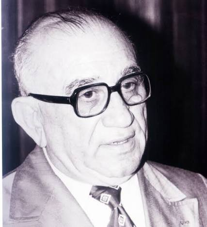
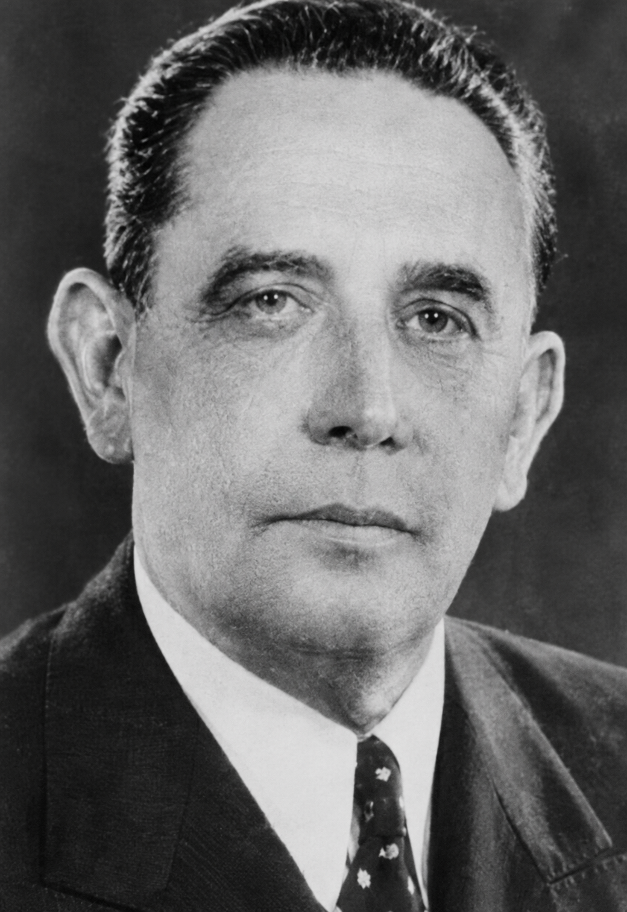
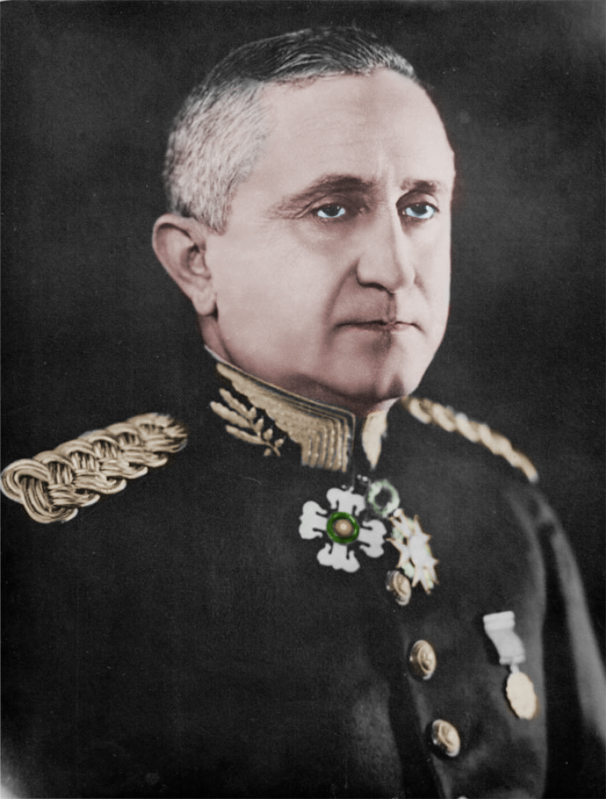
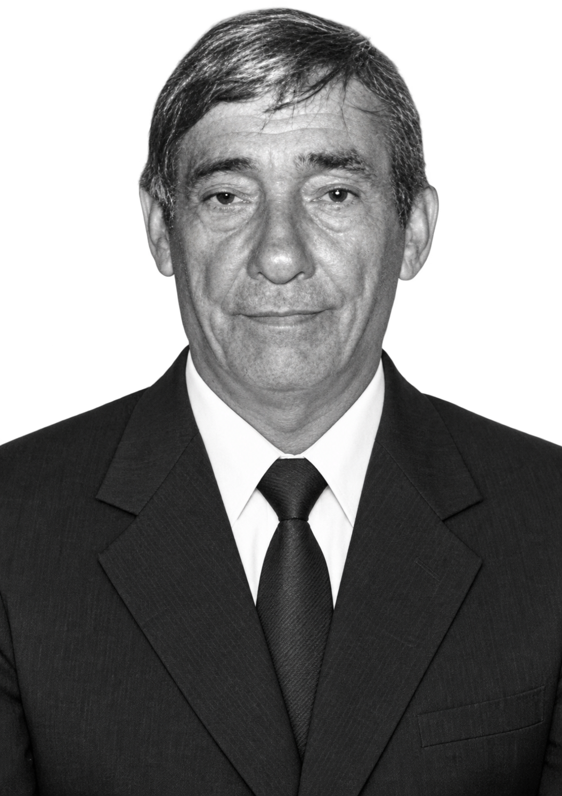

Dr. José Lucas de Sousa Rangel
Juiz de Direito que presidiu a solenidade e instalou o município
Ver biografia


Conheça a trajetória de todos os protagonistas que contribuíram para a história do nosso município. Cada personalidade deixou sua marca no desenvolvimento de Cajari, e suas histórias fazem parte da nossa memória coletiva.
Juiz de Direito que presidiu a solenidade e instalou o município
Ver biografiaPadre que discursou e mencionou a nomeação do irmão para prefeito
Ver biografia


